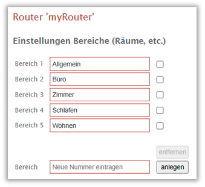
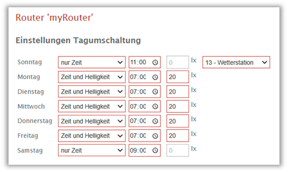
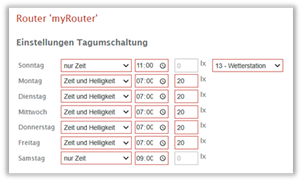
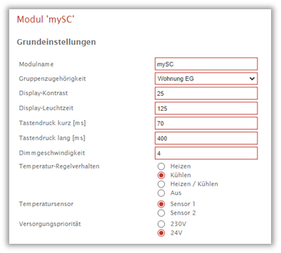
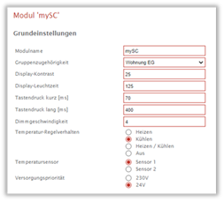
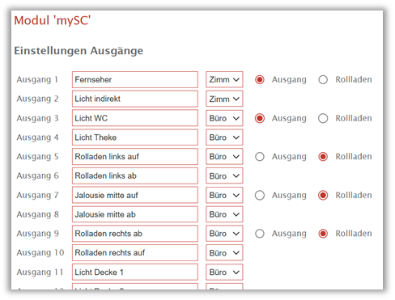

Smart Configurator –
Online-Konfiguration des Habitron-Systems
1 Bedienung des Smart Configurator
Der Smart Configurator erlaubt die vollständige Konfiguration des Habitron-Systems über eine Web-Bedienoberfläche. Zugänglich ist dieser nur für Administratoren von Home Assistant, um „normalen“ Nutzern nicht die Möglichkeit zu geben, kritische Änderungen vorzunehmen. Die Daten sind nicht im Configurator gespeichert, sondern werden über den Smart Hub aus dem System ausgelesen und dargestellt. Beim Speichern von Änderungen werden diese direkt zurück ins System gespeichert und entweder im Router oder in den Modulen abgelegt.
Aufgerufen wird der Configurator über das seitliche Menu von Home Assistant. Auch der Configurator hat auf der linken Seite ein Menu, über das sich Einstellungen für den Router, die Module oder das Gesamtsystem erreichen lassen. Auch ein Bereich mit Dokumentationen befindet sich dort.
1.1 Einstellungen für den Router
Wird auf der linken Menuleiste der Punkt „Router“ gewählt, gelangt man auf eine Übersichtsseite, die den aktuellen Routerstatus anzeigt. Auf der Seite kann in den Einstellungsmodus gewechselt werden oder Konfigurationsdateien in den Router oder aus diesem heruntergeladen werden. Jeder der Schritte kann grundsätzlich wieder abgebrochen werden, bevor eine Veränderung in der Anlage wirksam wird.

Die Einstellungen erfolgen über mehrere Seiten, die mit den Buttons „weiter“ und „zurück“ unten in dem roten Balken gewechselt werden können. Erst mit dem „Speichern“-Button erfolgt die Übernahme ins System. Dann werden die Einstellungen im Router gespeichert. Ein Abbruch macht alle Änderungen, die auf den Einstellungsseiten ohne zu speichern gemacht wurden, rückgängig.
Auf der ersten Seite erhält der Router einen Namen. Außerdem lassen sich die beiden benutzerdefinierten Modi, die zusätzlich zu den Standard-Modi, wie „Anwesend“, „Abwesend“, „Schlafen“ und „Urlaub“ zur Verfügung stehen, mit einem aussagekräftigen Namen versehen.
Mit dem Button „weiter“ gelangt man zur Seite 2, auf der Bereiche angelegt und benannt werden können. Die hier definierten Bereiche (z.B. Räume, aber auch Bereiche wie Garten, Dach, etc.) können den Habitron-Modulen und -Controllern zugewiesen werden. Sollten einzelne Ein- oder Ausgänge eines Controllers in einen anderen Bereich verlegt worden sein, kann das später entsprechend eingetragen werden.

Die Bedienung erfolgt bei allen Eintragungen identisch. Zum Neuanlegen wird im unteren Feld eine Zahl eingegeben oder die Pfeiltasten am rechten Rand der Textbox verändert. Es erfolgt eine Überprüfung auf den Wertebereich und bereits vergebene Zahlen dürfen nicht eingegeben werden, in diesem Fall wird der nächste freie Zahlenwert übernommen. Neu angelegte Gruppen erhalten einen allgemeinen Namen, der umbenannt werden sollte. Über die Auswahlkästchen rechts lassen sich existierende Einträge wählen und daraufhin entfernen.
Auf der folgenden Seite werden Gruppennamen vergeben.

Die Gruppen dienen dem Zweck, die Modi sowie die Zustände „Tag“/ „Nacht“ und „Alarm“ in Bereichen unabhängig voneinander steuern zu können. Während die Modi, z.B. „Anwesend“ in den Gruppen immer unabhängig voneinander sind, können Tag/Nacht und Alarm über die Gruppe 0 übergreifend verwendet werden. Wenn also unabhängige Zustände erwünscht sind, müssen hier Gruppen angelegt werden.
Die folgenden beiden Seiten dienen der Einstellung der Tag-/Nachtumschaltung.

Für jeden Wochentag kann eine Zeit und/oder ein Helligkeitswert eingegeben werden, je nach ausgewählter Betriebsart. Neben der auschließlichen Zeit- oder Helligkeitsumschaltung bedeutet „Zeit und Helligkeit“, dass nach Erreichen der Uhrzeit der Helligkeitswert überschritten sein muss, um in den Tag-Modus zu wechseln. „Zeit oder Helligkeit“ wechselt, sobald eins der beiden Kriterien erreicht ist.
Seite sechs zeigt alle definierten globalen Merker. Merker sind systeminterne Variablen in der Habitron-Anlage, die für Automatisierungen genutzt werden können. 16 Merker sind im Router abgespeichert und können in allen Modulen verwendet werden, weitere 16 sind lokal in den Modulen hinterlegt, werden in deren Einstellungen verwaltet und lassen sich auch nur in deren Automatisierungen nutzen.

Die Bedienung erfolgt bei allen Einstellungen in gleicher Weise: Mit einer neuen Nummer wird ein Element angelegt, das danach umbenannt werden kann. Vorhandene Einträge können selektiert und entfernt werden.
Die letzte Seite erlaubt die Verwaltung von bis zu 255 Sammelbefehlen in derselben Weise.
Wenn alle Einstellungen erfolgt sind, bitte das Speichern nicht vergessen!
1.2 Einstellungen für die Module
Nach der Auswahl des Menupunkts „Module“ wird eine Übersicht aller im System vorhandenen Module dargestellt. Jedes Modul bietet auf seiner Übersichtsseite Informationen zur Adresse, den Routerkanal, über den das Modul angebunden ist, und einer Seriennummer sowie dem Softwarestand der Firmware. Bei Modulen, die Aktoren steuern, ist neben den Buttons für die Einstellungen und die Konfigurationsdatei auch ein dritter verfügbar, um die Automatisierungen zu verwalten. Die Einstellungsseiten unterscheiden sich je nach Typ des Moduls. Hier ist exemplarisch der Raumcontroller beschrieben, die anderen Module bieten weniger Konfigurationsoptionen.
Die erste Seite mit den Grundeinstellungen enthält den Modulnamen und dessen Gruppenzugehörigkeit. Es werden grundsätzlich nur Gruppen angeboten, die mit einem Namen versehen wurden, bei anderen, unbenannten Gruppen wird davon ausgegangen, dass diese nicht relevant sind.

Raumcontroller bieten zusätzlich Einstellungen für das Display, Tastenzeiten, das Dimmen, die Klimatisierung und die Priorität der Spannungsversorgung.
Seite zwei ermöglicht die Benennung der acht Modultasten. Auch hier gilt, nicht benannte Tasten erscheinen nicht in Home Assistant als Entitäten. Nachfolgend können die acht roten Signal-LEDs mit Namen versehen werden. Die Einstellungen der Eingänge umfassen neben die Namen die Umschaltung zwischen Taster und Schalter. Beim Input-Modul mit 24V-Eingängen lassen sich zusätzlich sechs der Eingänge zu Analogeingängen umkonfigurieren. Für jeden Eingang kann abweichend vom Bereich des Moduls ein eigener Bereich ausgewählt werden, z.B. weil ein Eingang in den Nebenraum geführt wurde.

Auf der Seite der Ausgänge sind ebenfalls Namen für alle verwendeten Ausgänge zu vergeben. Bei den ersten fünf Ausgangspaaren ist zusätzlich der Schalter für eine Rollladenverschaltung zu setzen, die sich auf die Folgeseite auswirkt.
Über eine ausklappbare Liste können ggf. abweichende Bereiche für jeden einzelnen Ausgang eingestellt werden. Der Bereich des Moduls ist voreingestellt, sofern keine abweichende Einstellung vorgenommen wurde. Die Bereiche werden nur zur Dokumentation gespeichert und vom Habitron-System nicht weiter ausgewertet.
Auf der folgenden Seite sind für die als Rollladen konfigurierten Paare Einstellungen zu finden. Der Name wird von der vorherigen Seite übernommen, allerdings werden Bezeichnungen wie „auf“, „ab“, „up“, „down“ aus dem Namen entfernt und je nach hier definierter Polarität für die einzelnen Ausgänge des Paares angepasst.

Je Rollladen sind zwei Textfelder vorhanden, um die Zeiten für die Verstellung eintragen zu können. Das erste Feld beschreibt das Öffnen/Schließen des Rollladens. Ist im zweiten Feld ein Wert größer als Null eingetragen, wird der Rollladen als Jalousie erkannt, die zweite Zeit beschreibt dann die Zeit für das Umlegen der Lamellen.
Auf der nächsten Seite lassen sich Zähler anlegen. Wie grundsätzlich wird zuerst eine Nummer vergeben, dann erscheint in diesem Fall ein Popup-Fenster mit der Abfrage, wie viele Zählerwerte zulässig sind (wenn der obere Wert beim Hochzählen überschritten wird, geht es zurück auf die Eins).
 Danach können
Logikfunktionen für das Modul verwaltet werden. Hier wird beim Neuanlegen über
ein Popup-Fenster abgefragt, um welche Logikfunktion es sich handeln (AND,
NAND, OR, NOR) und wie viele Eingänge die Funktion haben soll.
Danach können
Logikfunktionen für das Modul verwaltet werden. Hier wird beim Neuanlegen über
ein Popup-Fenster abgefragt, um welche Logikfunktion es sich handeln (AND,
NAND, OR, NOR) und wie viele Eingänge die Funktion haben soll.
Die Folgeseiten erlauben die Verwaltung von lokalen Merkern, Direktbefehlen und Visualisierungsbefehlen, sowie Meldungstexten.
Auch bei den Einstellungen für die Module am Ende bitte das Speichern nicht vergessen. Alle Einstellungen, die bis dahin gemacht werden, sind nur vorläufig, d.h. mit „Abbruch“ kann man jederzeit Eingaben wieder verwerfen. „Speichern“ startet einen Upload der Einstellungen ins entsprechende Modul.
1.3 Automatisierungen
Auf der Übersichtsseite jedes Moduls, das Aktionen ausführen kann, befindet sich unten ein Button „Automatisierungen“, über den sich eine Liste der im Modul gespeicherten Automatisierungen anzeigen lässt.

Auf einer ersten Seite werden alle lokalen Automatisierungen angezeigt, die Auslöser auf dem entsprechenden Modul mit Aktionen desselben Moduls verbinden. Über den „weiter“-Button lassen sich die Automatisierungen anzeigen, die von anderen Modulen ausgelöst werden. Eine dritte Seite werden Automatisierungen angezeigt, die vom gewählten Modul ausgelöst, aber auch anderen Modulen ausgeführt und auch dort gespeichert sind. Die Listen lassen sich nach Auslösern, Bedingungen oder Aktionen sortieren, um gleichartige Regeln schneller auffinden zu können.
Die Bedienung erfolgt auf allen Seiten identisch. Eine der Automatisierungsregeln ist immer ausgewählt. Diese kann entweder gelöscht, geändert oder als Vorlage für eine neue Regel genutzt werden. Beim Löschen erscheint ein Popup mit einer Rückfrage, die eine Freigabe oder das Abbrechen des Löschvorgangs ermöglicht.
Beim Neuanlegen oder Ändern erscheint ein neues Fenster mit der Übersicht des entsprechenden Befehls. Durch die vorherige Auswahl eines Befehls sind auch beim Anlegen bereits alle Felder befüllt, können aber beliebig geändert werden. Die Eingabe ist in drei Bereiche gegliedert: Auslöser, Bedingung und Aktion. Die Konfiguration erfolgt mit Ausnahme einiger Zahlenwerte komplett über Auswahlboxes, bei denen nur gültige Auswahlen möglich sind. Diese richten sich nach dem Modul und dessen Konfiguration.
Wenn etwa ein Modul keine Taster hat oder alle Eingänge als Schalter konfiguriert sein sollte, kann als Auslöser kein Tasterereignis gewählt werden. Wenn ein Tasterereignis als Auslöser gewählt wurde, muss in der zweiten Box aus der Liste einer der als Taster konfigurierten Eingänge gewählt werden. Dann ist noch festzulegen, ob ein kurzer oder langer Tastendruck die Regel auslösen soll. In ähnlicher Weise erfolgt die Konfiguration der anderen Auslöser, einer Bedingung oder einer Aktion.
Einen Unterschied gibt es beim Neuanlegen einer externen Automatisierung: Vor dem Öffnen der Einstellungsseite erscheint ein Popup mit der Abfrage nach dem externen Modul.
Die Einstellungen lassen sich folgenlos vornehmen. Wenn eine Automatisierung definiert ist, wird die Seite mit „OK“ geschlossen, ein Abbruch ist ebenfalls möglich. Die neue oder geänderte Automatisierung erscheint in der Liste und ist dort für den nächsten Schritt selektiert. So können mehrere, ähnliche Automatisierungen zügig eingegeben werden, wenn sich diese nur in wenigen Auswahlpunkten unterscheiden. Zum Abschließen der gesamten Programmierung gilt dasselbe wie für die Konfiguration. Es lassen sich beliebig viele Regeln anlegen, ändern und löschen, solange nicht auf „Speichern“ gedrückt wird, bleiben diese Änderungen temporär und können mit einem Abbruch jederzeit verworfen werden. „Speichern“ überträgt diese als neue Konfiguration ins entsprechende Modul, bzw. bei externen Aktionen in diese Module.
1.4 Datensicherung
Auf jeder Übersichtsseite eines Moduls oder des Routers kann ein Dialog für die Konfigurationsdatei geöffnet werden.

Über einen Download wird die vollständige Konfiguration des entsprechenden Moduls unter dem angegebenen Dateinamen in den Download-Ordner des Endgerätes gespeichert. Umgekehrt kann mit Hilfe des Auswahlfensters eine Konfigurationsdatei ausgewählt werden, die im Modul gespeichert wird. Dabei wird zuvor überprüft, ob die in der Datei abgelegte Moduladresse und der Modultyp mit dem aktuellen Modul übereinstimmt.
1.5 Systemkonfiguration
Über die Hub-Seite kann man mit dem Button „Systemkonfiguration“ ein ähnliches Popup-Fenster öffnen.

Dort kann im Bereich „Upload und Download der Konfiguration“ zur Sicherung die Konfiguration des gesamten Systems in einer Datei auf das Endgerät heruntergeladen werden (Backup), bzw. wieder in alle Module geladen werden (Restore).
Dieser manuelle Schritt der Datensicherung wird in der Regel allerdings selten notwendig sein, denn es gibt einen automatischen Datensicherungsprozess (siehe nächster Abschnitt). Wenn allerdings ein Backup wieder eingespielt werden soll, um auf einen älteren Konfigurationsstand zurück zu greifen, ist hier im Upload-Bereich die entsprechende Datei auszuwählen. Auf die lokalen, automatisch gesicherten Backups kann über die Auswahlliste direkt zugegriffen werden.
1.5.1 Automatische Datensicherung
Täglich wird um Mitternacht ein automatisches Backup des gesamten Systems erstellt und im Ordner "/addon_configs/aed76be6_smart_hub" auf der Speicherkarte des Smart Center abgelegt. Jeden Montag wird zusätzlich ein wöchentliches Backup und am ersten Tag des Monats ein monatliches Backup gespeichert. Von den täglichen Backup-Files werden nur die letzten sieben und von den wöchentlichen Files die letzten fünf behalten, um die Zahl der gespeicherten Backup-Dateien zu begrenzen. Das Speicherdatum ist aus dem Filenamen ersichtlich, z.B. „sysbackup_2025_03_01_d.hcf“.
Diese Daten sind zunächst noch immer auf dem Smart Center gesichert und wären bei einem Ausfall des Geräts bzw. der Speicherkarte verloren. Da auch Home Assistant automatische Backups vornimmt und der Ordner des Smart Hub Addons dabei mitgesichert wird, ist auch die Historie der Systemkonfigurationen miteingeschlossen. In der Konfiguration des Home Assistant Backups sollte allerdings ein externes Speichermedium als Ablageort eingestellt werden, damit die Daten unabhängig vom Smart Center gesichert sind.
1.5.2 Dokumentation der Systemkonfiguration
Aus dem oben dargestellten Popup-Fenster heraus lässt sich auch eine Dokumentation des gesamten Systems erzeugen. Es wird eine Html-Datei, die für den Router und jedes Modul die Beschriftungen und Automatisierungen tabellarisch auflistet, erzeugt und automatisch auf das jeweilige Endgerät heruntergeladen. Diese liegt danach im Downloads-Ordner z.B. des PCs oder Mobiltelefons und kann dort direkt geöffnet werden. Eine Besonderheit tritt bei der Bedienung mit dem Mobiltelefon auf: Die Html-Datei wird mit der Dateiendung ".txt" versehen. Daher muss man diese, bevor man sie mit dem Browser öffnen kann, zuvor in ".html" umbenennen.
1.6 Updates
Grundsätzlich bietet Smart Center eine automatische Versorgung mit Updates, auch für die Firmware von Modulen und Router. Mit jeder neuen Version des Smart Hub Add-ons wird der aktuelle Stand aller Firmware-Dateien mit ausgerollt. Wenn ein Modul oder der Router einen davon abweichenden Firmwarestand aufweisen sollte, erfolgt über Home Assistant eine Information, über die dann auch der Update-Vorgang angestoßen werden kann. Dies ist möglich, ohne den Smart Configurator zu benutzen.
Zusätzlich kann von der Übersichtsseite des Hubs ein Update der Router- oder Modulfirmware auf einen beliebigen Stand vorgenommen werden. Sollte eine aktuellere Version für ein Modul vorhanden sein, kann die betreffende Modulart über eine Auswahlliste selektiert werden. Soll eine beliebige Version geflasht werden, ist zunächst auf dem lokalen Gerät eine Firmwaredatei auszuwählen, die dann auf den Hub geladen wird. Danach ist immer noch ein Abbruch möglich. Bei Modulen findet im Anschluss ein Vergleich mit den im System vorhandenen Modulen statt und es wird eine Übersicht aller Module des zur Firmware kompatiblen Typs dargestellt. Wenn die Firmware neuer ist als der Firmwarestand eines Moduls, wird dieses selektiert dargestellt.

Manuell lassen sich jetzt Module anwählen oder abwählen, um gezielt nur bestimmte Module mit der veränderten Firmware zu flashen. Über eine manuelle Selektion kann auch ein älterer Firmwarestand geflasht werden.
Wenn der Button „Flashen“ gedrückt wurde, ist der Vorgang nicht mehr abzubrechen. In den Kacheln der Module wird ein Status eingeblendet. Sollte dieser Status für einige Zeit lang unverändert bleiben, kann dies am Smart Center liegen, das in der Zeit einen anderen Prozess ausführt. Dies hat jedoch keine Auswirkung auf den Update-Prozess, der vom Router ohne Zutun des Smart Center durchgeführt wird. Für die Zeit des Flash-Vorgangs ist der Smart Hub für externe Kommandos gesperrt.
2 Dokumentation
Über das seitliche Menu lässt sich der Dokumentationsbereich öffnen. Neben diesem Dokument lässt sich dort auch eine erste Einführung, sowie eine kurze Beschreibung der Grundbegriffe finden, die bei Home Assistant geläufig sind.
2.1 Lizenzen
Über den Eintrag „Lizenzinformation“ kann eine Tabelle angezeigt werden, die alle von Smart Hub, Smart Center und Home Assistant verwendeten Softwarepakete und deren Open Source Lizenzen auflistet. Diese Tabelle wird automatisiert aufbereitet und dieser Vorgang dauert einige Minuten. Der Vorgang sollte nicht abgebrochen werden.